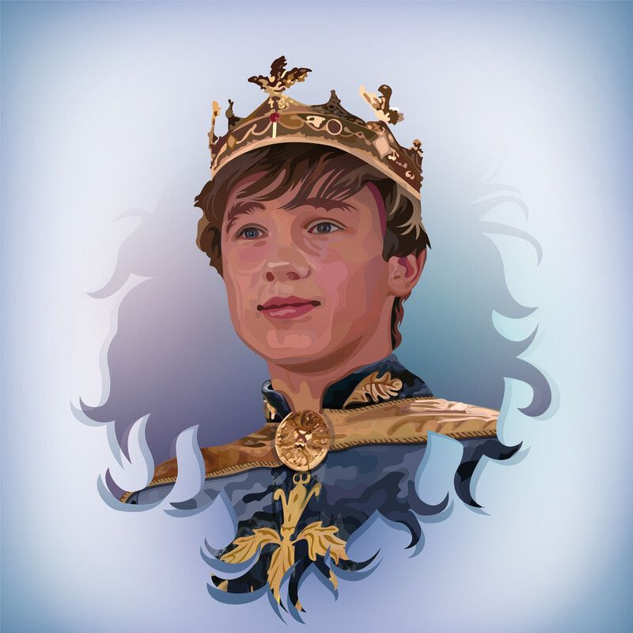
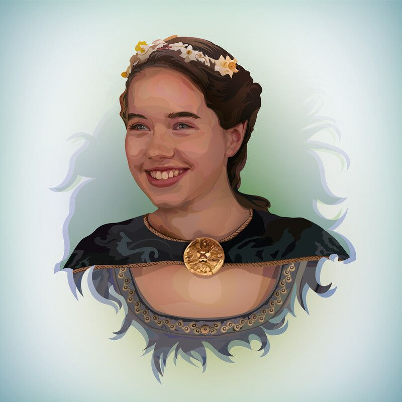
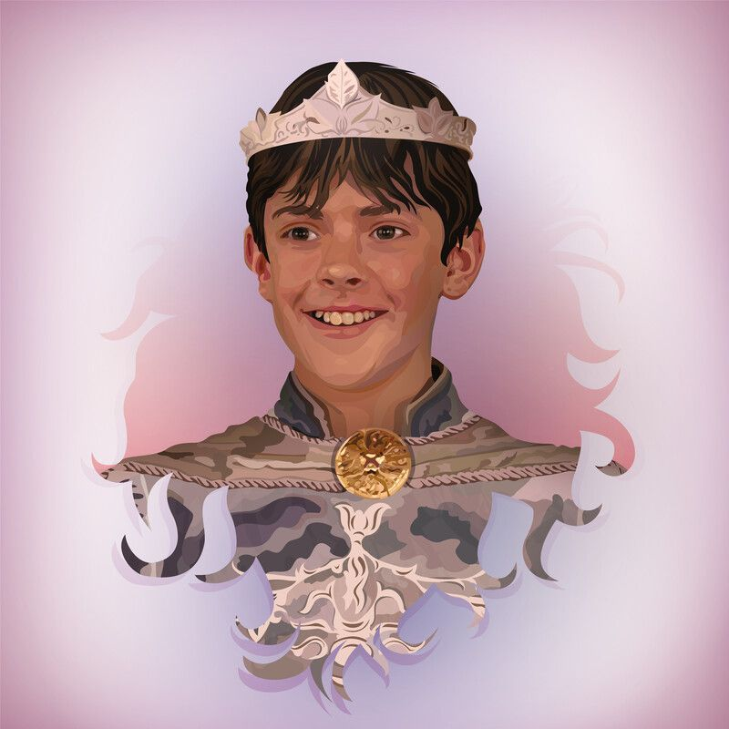
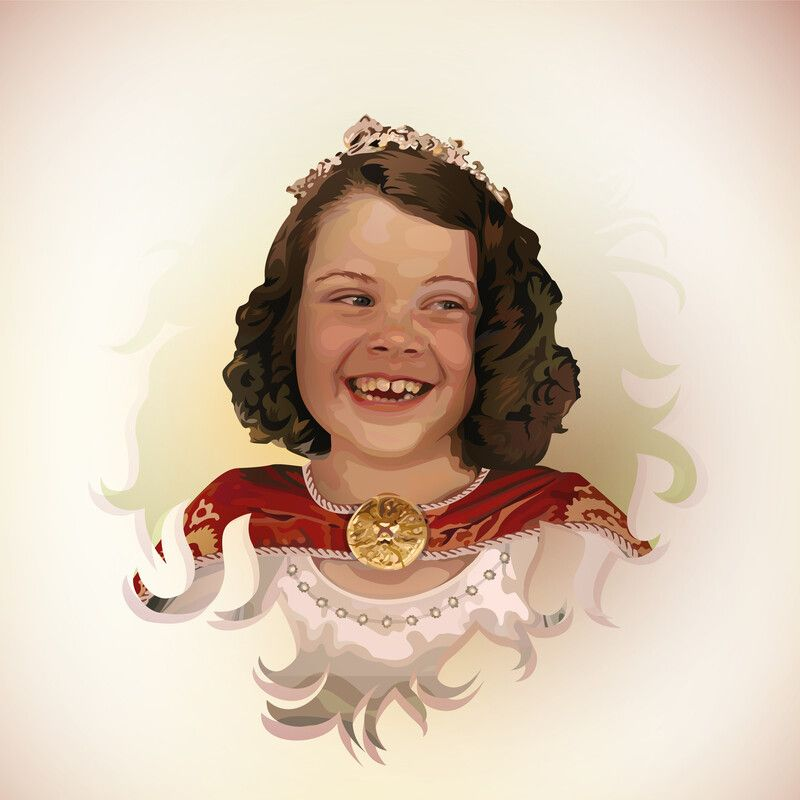

The story begins with Peter Pevensie (William Moseley), Suzan Pevensie
(Anna Popplewell), Edmund Pevensie (Skandar Keynes) and Lucy Pevensie
(Georgie Henley) who had to be evacuated to professor Diggory Kirkel's
house which is located in a remote area. One day while they were
playing hide and seek, Lucy found an old cupboard and entered it. Lucy
was surprised when she was already in a country called Narnia. The
country is connected to the cupboard at Professor Kirkel's house. Lucy
who met Mr. tumnus and heard a story about a white magician named
Jadis who controlled and cursed Narnia, then told the story to the
other 3 brothers.
Of course, none of his brothers believed that. But one of them,
Edmund, deliberately followed Lucy into the country in secret without
the other brothers knowing. Until finally Lucy brought her 3 sisters
into the country and saw the house of mr. Messy tumnus. At that time
they continued their journey and met a pair of beavers who invited
them to stop by their house. But unfortunately Edmund disappeared he
met Jadis (white witch) to collect sweets, when Edmund followed Lucy
(remember...) he met the white wizard ( Jadis ) and Jadis promised him
to make him king and give him sweets.
But it was just a hoax from Jadis because there is a prophecy in
Narnia which states that "two sons of Adam and two daughters of Eve
will come who will free Narnia from the long winter and defeat Jadis."
Of course you already know what Jadis means? Yes, he wants to kill the
children of Adam and Eve so that his power is not invincible.
Then the beaver suggested that the three of them go to Aslan as ruler
of Narnia for help. On their way, they encountered many obstacles
caused by Jadis's men. When meeting with Aslan the problem is over,
Edmund returns with his brother. But one night Lucy and Suzan found
Aslan walking alone, they followed him and were FOUND. Aslan told them
to leave him. Lucy and Suzan agreed but still followed Aslan silently.
They saw Aslan going to the stone table to meet Jadis and his troops
then he was killed.
if you want to know the continuation of the story you can directly
watch "The Chronicles of Narnia: The Lion, the Witch and the
Wardrobe".
Informations
The Chronicles of Narnia: The Lion, the Witch and the
Wardrobe (2005)
The Chronicles of Narnia: Prince Caspian (2008)
The Chronicles of Narnia: The Voyage of the Dawn Treader
(2010)
The Last Battle
The Magician's Nephew
The Silver Chair
The Voyage of the Dawn Treader
The Horse and His Boy
El sobrino del mago
El leon, la bruja y el ropero
El principe Caspian
The Lion, the Witch and the Wardrobe CD
The Silver Chair CD
The Horse and His Boy CD
Voyage of the Dawn Treader CD
Main Character Narnia

Peter Pevensie
He was the eldest of the Pevensie children. He first appeared in
"The Lion, the Witch and the Wardrobe". He is known as King
(Supreme) Peter the Great.

Susan Pevensie
He was the second of the Pevensie children. He first appeared in
"The Lion, the Witch and the Wardrobe". She is known as the
Gentle Queen Susan.

Edmund Pevensie
In The Lion, the Witch and the Wardrobe, he betrays his brothers
to the White Witch under his influence, but as the story
progresses he admits his guilt. He is redeemed by Aslan's
intervention and joins the fight against the sorceress.

Lucy Pevensie
He first appeared in "The Lion, the Witch and the Wardrobe". Of
her brothers and sisters, she is the closest to Aslan and
perhaps the one who believes the most in the existence of the
Narnian world. She is known as the Courageous Queen Lucy.